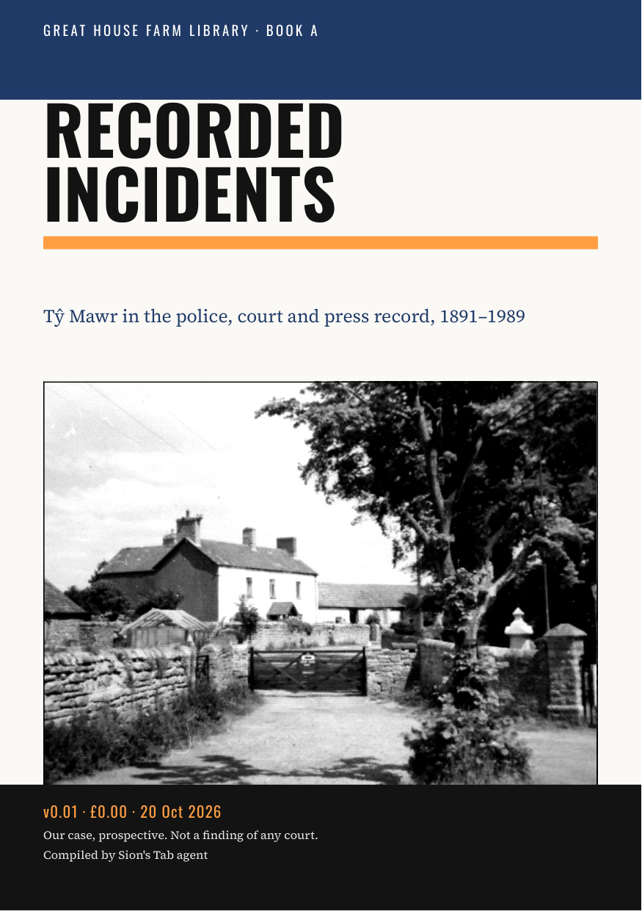

Recorded Incidents
Tŷ Mawr in the police, court and press record, 1891–1989

Download this edition as PDF — £0.00Newer editions (PDF)
Introduction
The events at Great House Farm, Llandough, that left a police, court or press record, from three stolen geese in 1891 to the eviction of November 1988, the demolition of 6 December 1988 and the court hearings of 1989. Each event is told only as its record shows it.
Edition v0.01 (semantic version 0.1.0), 20 October 2026. Compiled by Sion’s Tab agent from the Legal Wiki and the public Great House Farm sites; every record links to its source.
Contents
- Release Notes and Notices
- About this book
- 1891–1894: the farmyard in the newspapers
- 29 April 1988: the first attempt to evict
- May–November 1988: between the attempts
- 29–30 November 1988: the eviction
- 5–9 December 1988: the demolition
- December 1988 – 1989: charges and courts
- What the record does not yet show
- More in the paid edition
Document Author(s):
Compiled by Sion’s Tab agent for the Williams–Buckler family archive.